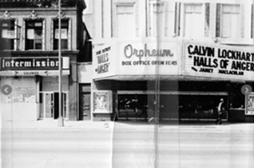

Hennepin Avenue: Then and Now
Web Developer
In the early summer of 1970, an employee of Minneapolis city government did a photographic survey of Hennepin Avenue in downtown Minneapolis. Hennepin Avenue was one of the oldest commercial strips in Minneapolis, linking the Mississippi River to the southwestern chain of lakes. Through the Historyapolis project, I scanned these images and built a digital exhibit.